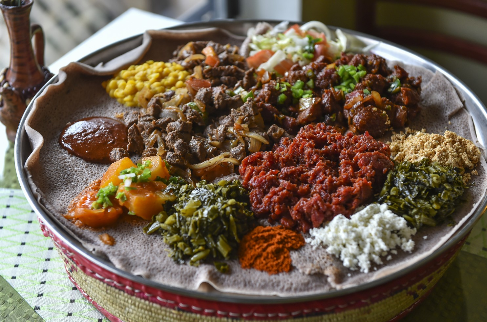

Serves 3 - 4 guests
Ingredients
2 lbs top round beef (freshly cut)Directions
1. Begin by cutting meat in big chunks to remove seams and fats. Dice meat into a grounded beef.
2. Use hands to knead the meat while spreading in mitmita, then settle into a large bowl. Make sure to mix this well.
3. In large saucepan, set your stove top to a very low heat. Melt butter with the rest of spices.
4. Once completely melted, transport the butter into large bowl. Mix the meat and butter with hands or mixer.
5. Serve warm with 8 rolls of Injera (Ethiopian bread). Side dishes include Gomen (collard greens), Ibe (heated milk), and Awaze (spicy wine sauce).
Although Kitfo is normally served uncooked, it is still a common practice to have fully cooked Kitfo.

Complements well with Tela (Ethiopian Beer) and warm company!